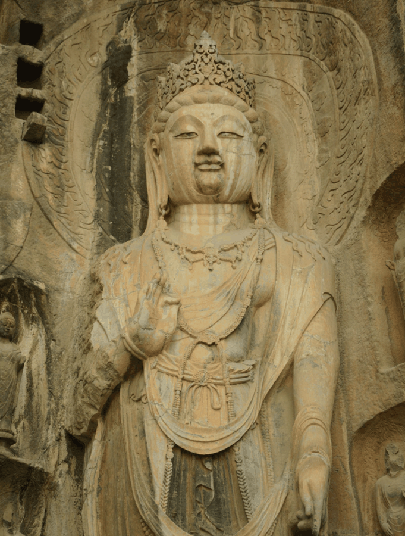
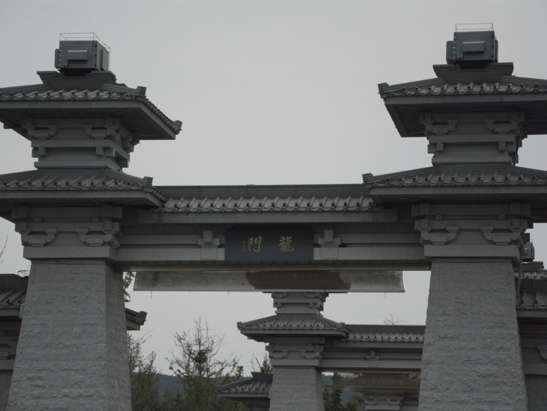
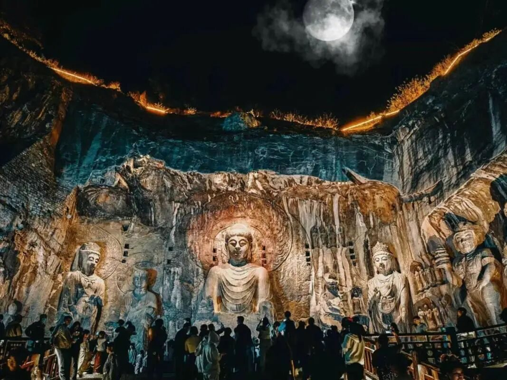

【行者无疆·豫旅拾遗】洛阳城里见秋风，龙门石窟映月容

|行者无疆·豫旅拾遗|
龙门石窟
洛阳城里见秋风
龙门石窟映月容


开启非遗之旅

实践第三天，行者们从八朝古都开封出发，来到十三朝古都洛阳区，继续非遗文化之旅。


通过专业人员的讲解，我们了解到这些石窟开凿于北魏，兴盛于唐朝；我们感叹于这些古人智慧的结晶经过数千年风吹雨打，历史兴衰变迁后依然能被今天的人们看到。人们在这里能够与千年前的思想发生碰撞。

探寻龙门石窟

卢舍那大佛慈悲祥和的目光穿过千年的岁月，注视着来来往往的世人。尽管之前了解过大佛的资料，当看到卢舍那大佛的一刹那，行者们无一不被其的宏伟所震撼。不同于神情严肃的云冈石窟，龙门石窟中的大佛都面带祥和的微笑，给人温柔而有力量的穿透感，直击心灵。
行者们还看到了以比耶手势走红的宾阳北洞正壁主尊阿弥陀佛像。但其实它是一种佛像手印，与相似，经过数千年风雨后的恰巧与如今的流行元素相碰。然而，结合处处可见的缺失头部，手部的佛像可知，我们对文化遗产的保护并没有那么好。除风雨侵蚀外，战争年代的动荡，百姓文物保护意识的落后，导致很多佛像被破坏。
行者非遗调查
沿着石窟不断前行，行者们细细观摩，佛像们或坐或立，面容庄严慈祥，眉弯目深，衣纹流畅，每一尊都别具匠心，透露出宁静与神圣的气息。行者们积极与游客们互动，探询他们对非遗文化的独到见解。石窟静默，而智慧永恒。非遗沉寂，而匠心传承不朽！
- 左右滑动

查看更多 -
“不识石窟真禅意，只缘未游夜龙门。”怀揣信仰，亲自漫步于龙门石窟之间，体会独一无二的超然；“千锤万凿普信念，延绵千年华夏魂。”站在这些古老的艺术前，赞叹中华民族精益求精、坚强不屈的民族精神。
元魏史余遗万佛，龙门壁上历千秋。
环屏洛邑连峰抱，遥指黄河入海流。
人伫碧空风瑟瑟，梦回幽窟思悠悠。
缅怀无限苍茫意，清浊倾壶醉倚楼。
-END-


扫码关注
这个夏天和行者们
一起豫旅拾遗！
来源 | 行者无疆·豫旅拾遗实践团
图片 | 行者无疆·豫旅拾遗实践团
文字 | 焦梓欣、李凌志
排版 | 王一涵、范伊诺
审核 | 张家铭